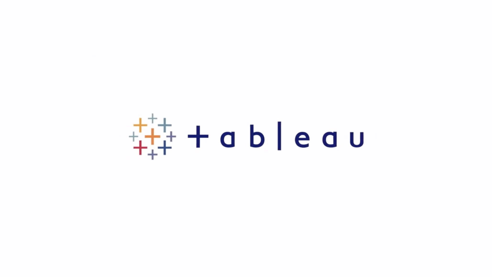
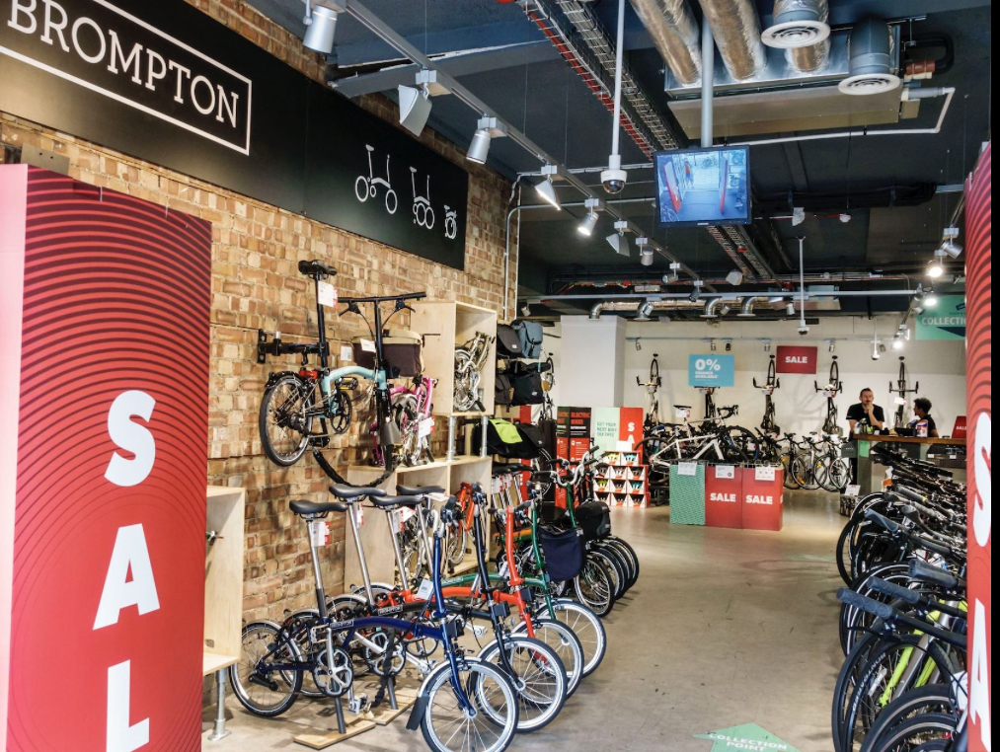

In this project, I focused on transforming raw world layoff data in SQL Server by overall cleaning, standardising and organising. This created a more reliable and structured dataset ready for analysis and visualisation.


In this project, I delved into Data Exploration within the layoffs from companies around the world in SQL Server. This would improve understanding of the data before or during data cleaning as it highlghted hidden patterns and trends, errors and outliers e.g. null values. It also reveals the quality of the data and the relevance of columns present or that need to be featured to form a deeper analysis which will then go on to form more reliable insights.

.
Tableau Dashboard featuring projects on AirBnb data within the US,

In this Project, I cleaned data of well known TV and Film caracters through python using pandas. This created effective transformation of the data to be organised, clear and coherrent.

In this project, I delved into scraping data from amazon which allowed me to monitor and analyse the price data for the product.

In this project, I took data from global bike sales, cleaned and standardised it ready for analysis. I then created the dashboard to convey a clear visualisation of the categories. This helped display certain trends of purchases ready for deeper analysis and understanding.

Donec eget ex magna. Interdum et malesuada fames ac ante ipsum primis in faucibus. Pellentesque venenatis dolor imperdiet dolor mattis sagittis magna etiam.